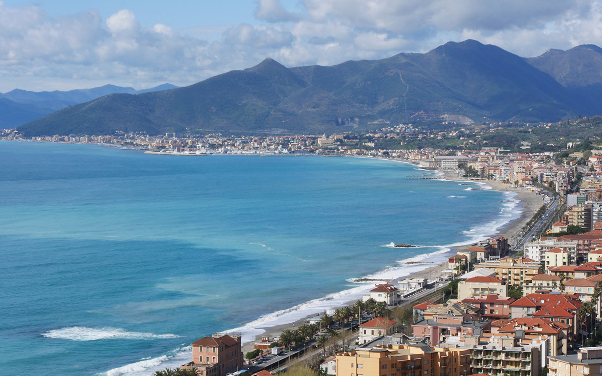
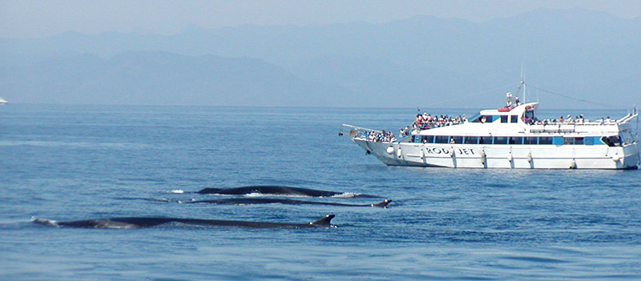
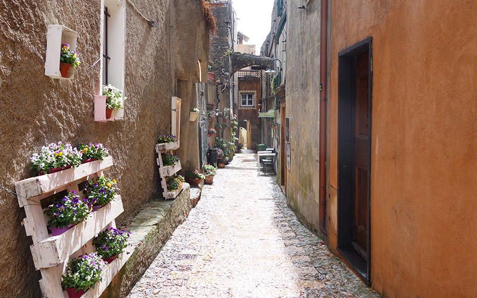
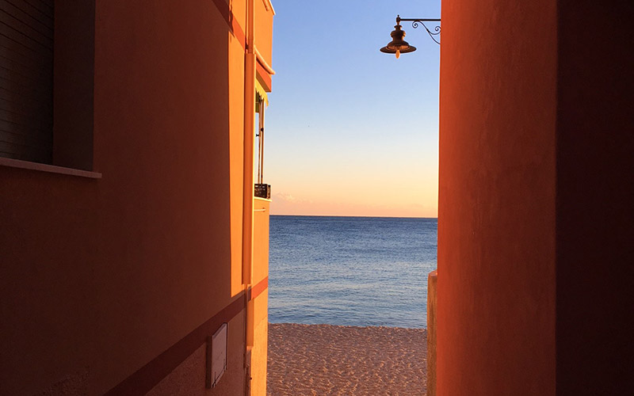
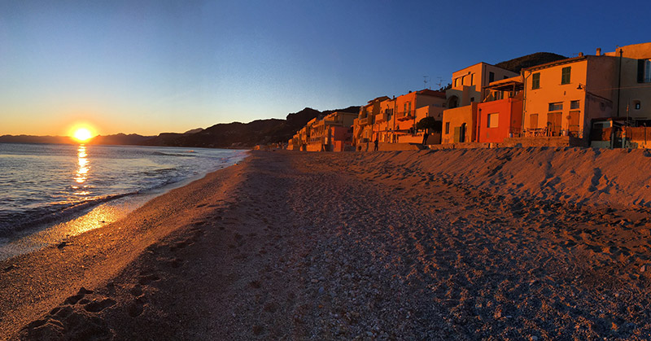
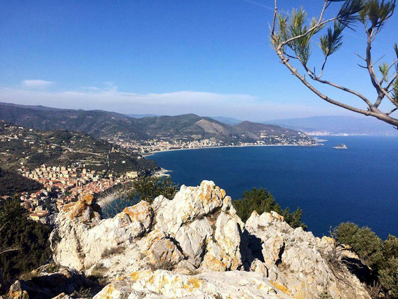
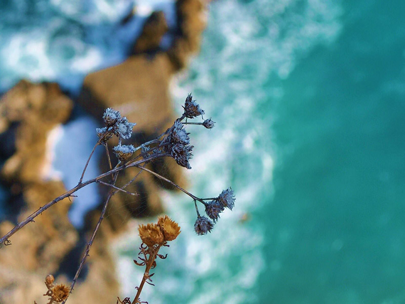
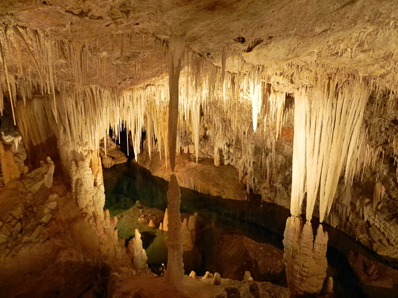
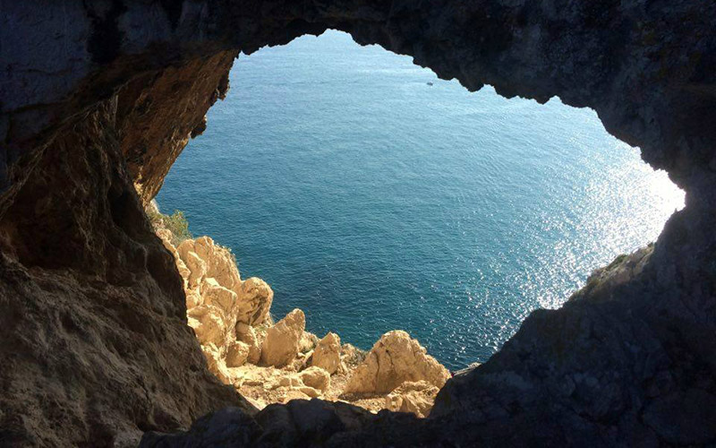
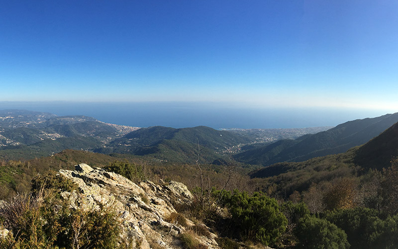

<!DOCTYPE html>
<html>
  <head>
    <meta name="viewport" content="width=device-width, initial-scale=1.0">
    <meta charset="utf-8">
    <title>Villa Paradiso</title>
    <link href="assets/css/normalize-min.css" rel="stylesheet">
    <link href="assets/css/styles.css" rel="stylesheet">
    <link href="https://fonts.googleapis.com/css?family=Josefin+Slab|Open+Sans|Pinyon+Script" rel="stylesheet">
  </head>
</html>
<div class="header"><a class="logo" href="index.html">
    <h1>Villa Paradiso</h1></a>
  <div class="hamburger-icon">
    <div class="bar"></div>
    <div class="bar"></div>
    <div class="bar"></div>
  </div>
  <ul class="main-nav">
    <li><a href="rooms.html">CAMERE E COLAZIONE</a></li>
    <li> <a href="surroundings.html">I DINTORNI</a></li>
    <li> <a href="garden.html">IL GIARDINO</a></li>
    <li> <a href="prices.html">PREZZI</a></li>
    <li> <a href="contact.html">CONTATTI</a></li>
  </ul>
  <ul class="language-picker"><a href="/de/index.html">
      <li></li></a><a href="/fr/index.html">
      <li></li></a><a href="/en/index.html">
      <li> </li></a><a href="/index.html">
      <li></li></a></ul>
</div>
<div class="header-white-fill"></div>
<div class="page-wrapper pages-wrapper">
  <section class="pages-hero-wrapper">
    <div class="page-section-text pages-hero">
      <h2>Cosa fare,<br> cosa vedere</h2>
      <p>Villa Paradiso è un ottimo punto di partenza, qualsiasi sia il Vostro interesse.</p>
    </div>
  </section>
  <aside class="surroundings-aside">
    <h2> Collegamenti rapidi</h2>
    <ul>
      <li><a class="smoothscrolllink" href="#">Il mare</a></li>
      <li><a class="smoothscrolllink" href="#">Ciclismo</a></li>
      <li><a class="smoothscrolllink" href="#">Arrampicata/Trekking</a></li>
      <li><a class="smoothscrolllink" href="#">Verezzi</a></li>
      <li><a class="smoothscrolllink" href="#">Finalborgo</a></li>
      <li><a class="smoothscrolllink" href="#">Sentiero del Pellegrino</a></li>
      <h2>Indirizzi utili</h2>
      <ul>
        <li><a href="http://societa.verezzi.it/" target="_blank">Antica Società Pizzeria</a></li>
        <li><a href="http://www.festivalverezzi.it/" target="_blank">Festival Teatrale di Borgio Verezzi</a></li>
        <li><a href="http://www.grottediborgio.it/" target="_blank">Grotte di Borgio Verezzi </a></li>
        <li><a href="http://www.comuneborgioverezzi.gov.it/" target="_blank">Comune di Borgio Verezzi</a></li>
        <li><a href="http://turismo.comunefinaleligure.it/en/outdoor" target="_blank">Outdoor a Finale</a></li>
        <li><a href="http://borgioverezzisentieri.altervista.org/" target="_blank">Borgio Verezzi Informazioni</a></li>
      </ul>
    </ul>
  </aside>
  <div class="surroundings-wrapper">
    <section id="sea">
      <h2>I Dintorni</h2>
      <p>Villa Paradiso è un ottimo punto di partenza, qualsiasi sia il Vostro interesse, la  spiaggia, il mare e le immersioni o le gite in barca inseguendo le rotte di delfini e balene nel Santuario dei cetacei.      Possiamo consigliarvi i migliori stabilimenti balneari, le spiagge libere, quelle attrezzate e le dog beach!</p>
    </section>
    <section id="verezzi">
      <p>Con una passeggiata di soli quindici minuti a piedi si arriva all'antico borgo saraceno di Verezzi con la sua romantica atmosfera e il prestigioso Festival Teatrale estivo  oppure è possibile partire alla scoperta di importanti centri storici come quello di Genova, a una sola ora di viaggio da Villa Paradiso, o tuffarvi nella mondanità del principato di Monaco e cogliere la frizzante vivacità di una città mediterranea come Nizza. </p>
    </section>
    <section id="finalborgo">
      <p>Finalborgo protetta dalle mura medievali, con le botteghe di artigianato, i ritrovi per sportivi e i caratteristici ristorantini. La splendida Varigotti con le colorate casette che lambiscono la spiaggia, uno dei lidi più rinomati d'Italia insieme alle vicine Baia dei Saraceni e la spiaggia del Malpasso.</p>
    </section>
    <section id="pellegrinotrail">
      <p>Una delle escursioni più belle dal punto di vista storico e paessaggistico che si possono fare in zona è il Sentiero del Pellegrino che collega Varigotti e Noli superando il promontorio di Caponoli con le incredibili vedute a picco sul mare e il campo visivo che si estende dal monte di Portofino fino a Capomele e nelle giornate più terse, la possibilità di ammirare la Corsica e le cave di marmo di Carrara.</p>
    </section>
    <section id="climbinghiking">
      <p>Un'altro dei Borghi più belli d'Italia è l'antica repubblica marinara di Noli un gioiello della Riviera di Ponente con i caratteristici porticati e le antiche torri da scoprire. </p>
      <p>Numerosi sono i percorsi escursionistici cui è possibile collegarsi senza bisogno di spostarsi in macchina : nella sola Borgio Verezzi è possibile esplorare  Sentiero Natura, Cultura, Geologico, Antichi percorsi rurali, dei Carri Matti , percorsi panoramici ricchi di varietà botaniche e reperti archeologici. </p>
      <p>E' possibile fare trekking lungo la strada napoleonica, antico percorso che collegava Borgio Verezzi a Finale Ligure passando il monte Caprazoppa e il suo promontorio panoramico. </p>
      <p>Oppure andare con tutta la famiglia alla scoperta del sottosuolo, visitando le Grotte di Borgio Verezzi , le più colorate d'Italia e le Grotte di Toirano con i suoi insediamenti preistorici. E per un approfondimento, da non perdere è il Museo archelogico del Finale . Nel 2017  Finale Ligure ha ospitato l'Incontro Internazionale di Speleologia. </p>
    </section>
    <section id="cycling"> 
      <p>Villa Paradiso si trova a pochi km dall'uscita autostradale A10 di Finale Ligure, celebre località per gli sport outdoor, è infatti possibile praticare ciclismo e mountain bike a tutti i livelli. Finale Ligure ospita importanti competizioni quali il Mondiale WEMBO World solo 24 Hour Mountainbike Championship e l’European Solo 24h MTB e l'Enduro World Series, e sul territorio diverse sono le attività di servizi per bikers, come noleggio, scuola MTB, guide e shuttle.</p>
      <p>Nondimeno il territorio del finalese è conosciuto tra i climbers di tutta Europa che amano praticare l'arrampicata nelle innumerevoli palestre di roccia del territorio che vanta alcune delle più belle falesie d'Italia. Finalborgo ospita da diversi anni l'evento di volontariato sportivo e sociale Finale for Nepal.</p>
      <p>La riviera ligure di Ponente accoglie anche numerose gare podistiche, di triathlon, trail, enduro e cross, oltre ad essere teatro di una delle più importanti corse ciclistiche dal 1907: la Milano-Sanremo.</p>
      <p>Conosciamo il territorio e i suoi prodotti e saremo felici di consigliarvi dove trovare l'olio di oliva taggiasca più genuino, vi indicheremo le aziende vinicole che producono i migliori Pigato, Rossese e Vermentino della zona, dove comprare il pesto, la salsa di noci e le specialità locali da provare, ma sopratutto vi consiglieremo i ristoranti, le osterie e gli agriturismi che frequentiamo anche noi del posto. Saremo lieti di segnalarvi i numerosi eventi, fiere, mercati e sagre gastronomiche che si tengono durante tutto l'arco dell'anno e vi aiuteremo a organizzare le vostre visite affinché la vostra vacanza possa diventare un'esperienza memorabile e possiate innamorarvi anche voi di questa meravigliosa Liguria.</p>
    </section>
  </div>
  <footer class="body-padding-footer">
    <div class="flex-wrapper">
      <div class="footer-group">
        <h4>Scegli la tua lingua</h4>
        <ul class="language-picker-footer"><a href="#de">
            <li></li></a><a href="#fr">
            <li></li></a><a href="#gb">
            <li> </li></a><a href="#it">
            <li></li></a></ul>
      </div>
      <div class="footer-group">
        <h4>Scopri di più</h4>
        <ul>
          <li><a href="rooms.html">CAMERE E COLAZIONE</a></li>
          <li> <a href="surroundings.html">I DINTORNI</a></li>
          <li> <a href="garden.html">IL GIARDINO</a></li>
          <li> <a href="prices.html">PREZZI</a></li>
          <li> <a href="contact.html">CONTATTI</a></li>
        </ul>
      </div>
      <div class="footer-group">
        <h4>Contatti</h4>
        <p>VILLA PARADISO <br> Via N. Sauro, 172 Borgio Verezzi </p>
        <p>Phone: 019 610622</p>
        <p>Email: villaparadiso@verezzi.it</p>
      </div>
    </div>
    <div class="copyright">
      <p>&copy 2018 Tutti i diritti riservati.</p>
    </div>
  </footer>
  <script src="../assets/js/app.js"></script>
</div>